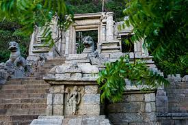

Munneswaram Temple

Munneswaram Temple is considered to be one of the most important sanctuaries in Sri Lanka which has been devoted to Shiva. It is believed that Durga is invincible, Shiva teaches wisdom and Vishnu is the protector. It is considered to be the home of the medieval sculpture of Hindu Pandya who reigned in Southern India. This temple is a pilgrimage during the time of full moon in the month of February and the ending of August. There is a competition in which devotees take part where they have to break the open coconuts as offerings on the sacred rocks.
Yapahuwa
There is a huge lion staircase which leads to the temple of Buddha with a sacred tooth relic. These stairs are half-way up to the hillside and they are considered to be a masterpiece of the citadel of Yapahuwa but unfortunately, now they are in ruins. The granite rock which emerges from thick vegetation against which the fortress of Bhuvanekabahu I has been built was earlier a lower town and a palace. Now it has become a striking site which provides an excellent view of the countryside which surrounds it.
Silver Temple

The temple got its name as the silver temple because it has been built on a rocky outcrop over a mine which is of silver. There are two shrines which are superimposed and partly carved out of the rocks. They make up the Silver Temple which is also known as Ridi Viharaya and it was first built by King Duttu Gemunu in the 2C BCE. There are many caves in here and in one cave there is a long reclining idol of Buddha which has an approximate height of about 9 m. The walls of the temple are covered with paintings which depict divinities. A person could enjoy the spectacular view of the mountain range of Knuckles from dagoba at the top of the hill.
Wilpattu National Park

Wilpattu National Park is famous in Sri Lanka for many reasons. Scenic attraction, wildlife and walking trails seek the attention of large chunk of visitors. Its location of approximately 188 kilometers away from the capital city Colombo makes it easily accessible to tourists. This park is home to beasts like Leopards, Elephants, Bears, Deer, Crocodiles, Reptiles and also ample verities of birds. The unique feature of this park is that the existence of "Willus"—a natural, sand-rimmed water lake and basins or depressions filling in with rainwater make it distinct. After rainy seasons, they are dried up. Declared as a National Park in 1938, its lake contains water for the resident and migratory water-birds.
Kalpitiya Diving Center

Kalpitiya Diving Center is a popular name amongst the tourists as well as locals. As Kalpitiya is a lagoon with the total area of 16.73km, it remains a must-visit site in Sri Lanka. This lagoon comprises of 14 islands which make it a perfect destination for the visitors. They are allowed to involve in numerous activities besides the usual one of sightseeing. It offers great scope for adventure watersports activities as well. Enriched with the variety of fish species, this place has indeed become one of the leading dry-fish production areas in Sri Lanka. Famous for the pearls in the history, it receives the tourists who are willing to explore the marine ecosystem with the diversity of habitats. They usually range from the bar reefs to flat coastal plains to saltpans amongst others.